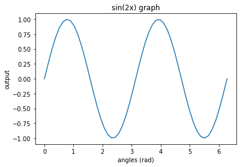

a = 1e-3
b = 0.001
c = 10**0
d = 1.0
e = c+a
f = e-b
g = 1.0/f
print(g-1)
print(g)2.220446049250313e-16
1.0000000000000002Goal of the Lab
Your first lab exercise is designed to acquaint you with some of the features of Python you’ll be using during the semester, and also some of the programming principles you’ll be using long afterward. Pay particular attention to details of syntax; very slight changes in what you type can have a large impact on results. Pay attention to subtle meanings in how variables are treated by your mind and the interpreter of the programming language.
Save your lab notebook in the following format “Last name + parnter’s last name + lab number”, e.g., “Delamere_Delamere_Lab1” and submit final work to Google classroom.
Text can be added to Jupyter Notebooks using Markdown cells. You can change the cell type to Markdown by using the Cell menu, the toolbar, or the key shortcut m. Markdown is a popular markup language that is a superset of HTML. You will use the Markdown cells to type responses to lab questions.
For detailed Markdown help, use the Jupyter “help” menu or try the following link
Double click this box to edit, then use the “run” botton on the toolbar to view the results. Alternatively, use the “cell” menu to run all cells for a subset of cells.
The following equation provides an example to \(\LaTeX\) typesetting, $ x = $. Try writing an equation of the form \(ax^2 + bx + c = 0\). For help using \(\LaTeX\), try this link
\[a^2 + b^2 = c^2\]
Inline code has back-ticks around it.
Embedded blocks of code use three back-ticks. Note how the code syntax is highlighed for readability.
def f(x):
"""a docstring"""
return x**2a = 1e−3
b = 0.001
c = 10∗∗0
d = 1.0
e = c+a
f = e−b
g = 1.0/f
print(g−1)Execute these commands by hitting the ’Run’ button.
What is the exact (theoretical) result for g?
1.0
2.220446049250313e-16
Probably something to do with the answer being close to the answer zero.
…Or the fact that the computational answer for g was not 1.0 like when calculated by paper.
a = 1e-3
b = 0.001
c = 10**0
d = 1.0
e = c+a
f = e-b
g = 1.0/f
print(g-1)
print(g)2.220446049250313e-16
1.0000000000000002#my first python programNumPy is the fundamental package for scientific computing with Python. It contains among other things:
a powerful N-dimensional array object
sophisticated (broadcasting) functions
tools for integrating C/C++ and Fortran code
useful linear algebra, Fourier transform, and random number capabilities
Besides its obvious scientific uses, NumPy can also be used as an efficient multi-dimensional container of generic data. Arbitrary data-types can be defined. This allows NumPy to seamlessly and speedily integrate with a wide variety of databases.
import numpy as np
np.linspace?
x = np.linspace(1,10,10)
print(x)The first command loads the numerical Python library called numpy. We will need this in each lab. It now identifies all commands in that library with the abbreviation np (your choice). The question mark behind a command prints a help file for that command; it can be a very useful way to learn how to use it and what exactly it means.
np.pi for the value of \(\pi\).#practice using numpy
import numpy as np
np.linspace
x = np.linspace(0,2*np.pi,361)
print(x)[0. 0.01745329 0.03490659 0.05235988 0.06981317 0.08726646
0.10471976 0.12217305 0.13962634 0.15707963 0.17453293 0.19198622
0.20943951 0.2268928 0.2443461 0.26179939 0.27925268 0.29670597
0.31415927 0.33161256 0.34906585 0.36651914 0.38397244 0.40142573
0.41887902 0.43633231 0.45378561 0.4712389 0.48869219 0.50614548
0.52359878 0.54105207 0.55850536 0.57595865 0.59341195 0.61086524
0.62831853 0.64577182 0.66322512 0.68067841 0.6981317 0.71558499
0.73303829 0.75049158 0.76794487 0.78539816 0.80285146 0.82030475
0.83775804 0.85521133 0.87266463 0.89011792 0.90757121 0.9250245
0.9424778 0.95993109 0.97738438 0.99483767 1.01229097 1.02974426
1.04719755 1.06465084 1.08210414 1.09955743 1.11701072 1.13446401
1.15191731 1.1693706 1.18682389 1.20427718 1.22173048 1.23918377
1.25663706 1.27409035 1.29154365 1.30899694 1.32645023 1.34390352
1.36135682 1.37881011 1.3962634 1.41371669 1.43116999 1.44862328
1.46607657 1.48352986 1.50098316 1.51843645 1.53588974 1.55334303
1.57079633 1.58824962 1.60570291 1.6231562 1.6406095 1.65806279
1.67551608 1.69296937 1.71042267 1.72787596 1.74532925 1.76278254
1.78023584 1.79768913 1.81514242 1.83259571 1.85004901 1.8675023
1.88495559 1.90240888 1.91986218 1.93731547 1.95476876 1.97222205
1.98967535 2.00712864 2.02458193 2.04203522 2.05948852 2.07694181
2.0943951 2.11184839 2.12930169 2.14675498 2.16420827 2.18166156
2.19911486 2.21656815 2.23402144 2.25147474 2.26892803 2.28638132
2.30383461 2.32128791 2.3387412 2.35619449 2.37364778 2.39110108
2.40855437 2.42600766 2.44346095 2.46091425 2.47836754 2.49582083
2.51327412 2.53072742 2.54818071 2.565634 2.58308729 2.60054059
2.61799388 2.63544717 2.65290046 2.67035376 2.68780705 2.70526034
2.72271363 2.74016693 2.75762022 2.77507351 2.7925268 2.8099801
2.82743339 2.84488668 2.86233997 2.87979327 2.89724656 2.91469985
2.93215314 2.94960644 2.96705973 2.98451302 3.00196631 3.01941961
3.0368729 3.05432619 3.07177948 3.08923278 3.10668607 3.12413936
3.14159265 3.15904595 3.17649924 3.19395253 3.21140582 3.22885912
3.24631241 3.2637657 3.28121899 3.29867229 3.31612558 3.33357887
3.35103216 3.36848546 3.38593875 3.40339204 3.42084533 3.43829863
3.45575192 3.47320521 3.4906585 3.5081118 3.52556509 3.54301838
3.56047167 3.57792497 3.59537826 3.61283155 3.63028484 3.64773814
3.66519143 3.68264472 3.70009801 3.71755131 3.7350046 3.75245789
3.76991118 3.78736448 3.80481777 3.82227106 3.83972435 3.85717765
3.87463094 3.89208423 3.90953752 3.92699082 3.94444411 3.9618974
3.97935069 3.99680399 4.01425728 4.03171057 4.04916386 4.06661716
4.08407045 4.10152374 4.11897703 4.13643033 4.15388362 4.17133691
4.1887902 4.2062435 4.22369679 4.24115008 4.25860337 4.27605667
4.29350996 4.31096325 4.32841654 4.34586984 4.36332313 4.38077642
4.39822972 4.41568301 4.4331363 4.45058959 4.46804289 4.48549618
4.50294947 4.52040276 4.53785606 4.55530935 4.57276264 4.59021593
4.60766923 4.62512252 4.64257581 4.6600291 4.6774824 4.69493569
4.71238898 4.72984227 4.74729557 4.76474886 4.78220215 4.79965544
4.81710874 4.83456203 4.85201532 4.86946861 4.88692191 4.9043752
4.92182849 4.93928178 4.95673508 4.97418837 4.99164166 5.00909495
5.02654825 5.04400154 5.06145483 5.07890812 5.09636142 5.11381471
5.131268 5.14872129 5.16617459 5.18362788 5.20108117 5.21853446
5.23598776 5.25344105 5.27089434 5.28834763 5.30580093 5.32325422
5.34070751 5.3581608 5.3756141 5.39306739 5.41052068 5.42797397
5.44542727 5.46288056 5.48033385 5.49778714 5.51524044 5.53269373
5.55014702 5.56760031 5.58505361 5.6025069 5.61996019 5.63741348
5.65486678 5.67232007 5.68977336 5.70722665 5.72467995 5.74213324
5.75958653 5.77703982 5.79449312 5.81194641 5.8293997 5.84685299
5.86430629 5.88175958 5.89921287 5.91666616 5.93411946 5.95157275
5.96902604 5.98647933 6.00393263 6.02138592 6.03883921 6.0562925
6.0737458 6.09119909 6.10865238 6.12610567 6.14355897 6.16101226
6.17846555 6.19591884 6.21337214 6.23082543 6.24827872 6.26573201
6.28318531]Functions are very important constructs that we will frequently encounter. A function needs a name, some input arguments (this can be zero, one, or more) and it can produce output, but doesn’t have to. A very simple function that calculates \(x^2 + 1\) could be defined as follows:
def f(x):
return x∗∗2+1Note the syntax: Each function starts with the word def. Then follows the name of the function and the input arguments (here just one). The function will return the value(s) specified after the code word return. The details are important: the line with def needs to be followed by a :, and all instructions need to be indented. Jupyter Notebook will do this automatically.
In the cell below, type this code (after importing numpy) and observe the syntax highlighting and auto indenting.
Call this function, e.g., add following lines and run the program:
y = f(2)
print y5
np.sin. Use an array of numbers from 0 to \(2\pi\) as input.[ 0.00000000e+00 2.53654584e-01 4.90717552e-01 6.95682551e-01 8.55142763e-01 9.58667853e-01 9.99486216e-01 9.74927912e-01 8.86599306e-01 7.40277997e-01 5.45534901e-01 3.15108218e-01 6.40702200e-02 -1.91158629e-01 -4.33883739e-01 -6.48228395e-01 -8.20172255e-01 -9.38468422e-01 -9.95379113e-01 -9.87181783e-01 -9.14412623e-01 -7.81831482e-01 -5.98110530e-01 -3.75267005e-01 -1.27877162e-01 1.27877162e-01 3.75267005e-01 5.98110530e-01 7.81831482e-01 9.14412623e-01 9.87181783e-01 9.95379113e-01 9.38468422e-01 8.20172255e-01 6.48228395e-01 4.33883739e-01 1.91158629e-01 -6.40702200e-02 -3.15108218e-01 -5.45534901e-01 -7.40277997e-01 -8.86599306e-01 -9.74927912e-01 -9.99486216e-01 -9.58667853e-01 -8.55142763e-01 -6.95682551e-01 -4.90717552e-01 -2.53654584e-01 -4.89858720e-16]
Write a function r2d that converts radians into degrees, minutes, and decimal seconds. Before you start coding, think about what the appropriate inputs and outputs are for such a function. Then write down the equations necessary to do the conversion. When coding those equations you will find the numpy function np.floor() quite useful. Learn what it does by executing np.floor?.
Repeat part 3, but instead start with an array of 361 real numbers between 0 and 360. You might write a function called d2r.
#practice using python functions
import numpy as np
np.sin?
def f(x):
return np.sin(2*x)
x = np.linspace(0,2*np.pi)
y = f(x)
print (y)
np.floor?
#part 4
def r2d(r):
return r*180/np.pi
r = y
d = r2d(r)
print (d)
#degrees and minutes
def minutes(d):
return (d - np.floor(d))*60
m = minutes(d)
print (m)[ 0.00000000e+00 2.53654584e-01 4.90717552e-01 6.95682551e-01
8.55142763e-01 9.58667853e-01 9.99486216e-01 9.74927912e-01
8.86599306e-01 7.40277997e-01 5.45534901e-01 3.15108218e-01
6.40702200e-02 -1.91158629e-01 -4.33883739e-01 -6.48228395e-01
-8.20172255e-01 -9.38468422e-01 -9.95379113e-01 -9.87181783e-01
-9.14412623e-01 -7.81831482e-01 -5.98110530e-01 -3.75267005e-01
-1.27877162e-01 1.27877162e-01 3.75267005e-01 5.98110530e-01
7.81831482e-01 9.14412623e-01 9.87181783e-01 9.95379113e-01
9.38468422e-01 8.20172255e-01 6.48228395e-01 4.33883739e-01
1.91158629e-01 -6.40702200e-02 -3.15108218e-01 -5.45534901e-01
-7.40277997e-01 -8.86599306e-01 -9.74927912e-01 -9.99486216e-01
-9.58667853e-01 -8.55142763e-01 -6.95682551e-01 -4.90717552e-01
-2.53654584e-01 -4.89858720e-16]
[ 0.00000000e+00 1.45333371e+01 2.81160447e+01 3.98596740e+01
4.89960712e+01 5.49276219e+01 5.72663419e+01 5.58592547e+01
5.07983984e+01 4.24148049e+01 3.12568474e+01 1.80543710e+01
3.67095320e+00 -1.09525826e+01 -2.48597071e+01 -3.71407512e+01
-4.69924087e+01 -5.37702798e+01 -5.70310222e+01 -5.65613498e+01
-5.23919840e+01 -4.47956442e+01 -3.42692091e+01 -2.15012156e+01
-7.32682166e+00 7.32682166e+00 2.15012156e+01 3.42692091e+01
4.47956442e+01 5.23919840e+01 5.65613498e+01 5.70310222e+01
5.37702798e+01 4.69924087e+01 3.71407512e+01 2.48597071e+01
1.09525826e+01 -3.67095320e+00 -1.80543710e+01 -3.12568474e+01
-4.24148049e+01 -5.07983984e+01 -5.58592547e+01 -5.72663419e+01
-5.49276219e+01 -4.89960712e+01 -3.98596740e+01 -2.81160447e+01
-1.45333371e+01 -2.80668372e-14]
[ 0. 32.00022673 6.96267977 51.58044183 59.76427208 55.65731603
15.98051219 51.55528185 47.90390246 24.88829393 15.41084499 3.26225896
40.25719184 2.84504147 8.41757695 51.5549273 0.45548027 13.78321261
58.13866875 26.31901189 36.48095806 12.26134585 43.84745523 29.92706579
40.39070036 19.60929964 30.07293421 16.15254477 47.73865415 23.51904194
33.68098811 1.86133125 46.21678739 59.54451973 8.4450727 51.58242305
57.15495853 19.74280816 56.73774104 44.58915501 35.11170607 12.09609754
8.44471815 44.01948781 4.34268397 0.23572792 8.41955817 53.03732023
27.99977327 60. ]An important aspect of coding is to display results. Let’s try this out with your \(\sin\) function. We will need to import the necessary plotting functions from the matplotlib library. All the plotting we will need for this class is contained in one part of this library called pyplot. We import it as:
from matplotlib import pyplot as pltGenerate an array of regularly spaced real numbers using np.arange(start,stop,step). Compare this with the np.linspace function.
Use your \(\sin\) function from above to calculate \(f(x) = \sin(2x)\).
Plot the results, using plt.plot(x,y). Add the command plt.show() to display the figure and run the program.
Add a title and axis labels. You can use the commands for plt.title(), plt.xlabel, and plt.ylabel(). Note that the pyplot text interpreter understands \(\LaTeX\) commands. For example, Greek letters can be displayed with e.g. plt.xlabel($\beta$).
Overplot \(f(x) = \cos(2x)\). Try to change line colors and/or symbols, i.e., check the matplotlib help online!
#practice plotting!
from matplotlib import pyplot as plt
np.arange(0,20,1)
def f(x):
return np.sin(2*x)
x = np.linspace(0,2*np.pi)
y = f(x)
plt.plot(x,y)
plt.title("sin(2x) graph")
plt.xlabel("angles (rad)")
plt.ylabel("output")Text(0, 0.5, 'output')